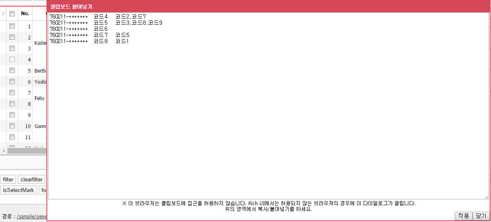

상태컬럼
: 해당 컬럼은 현재 데이터의 변경 여부를 알려줍니다.
헤더컬럼의 상태값은 데이터 변경이 없을 경우는 로 표시되고 데이터가 변경되면 로 표시됩니다.
각 row마다 상태정보도 신규건일 경우 로 수정건일 경우 로 삭제건일 경우 로 표시됩니다.
컬럼사이즈 변경
: 컬럼의 길이가 길어 데이터가 안 보일경우 컬럼의 사이즈를 조정하여 컬럼의 넓이를 늘립니다.
헤더컬럼의 컬럼과 컬럼 사이에 마우스를 올려놓고 클릭한 후 마우스를 우/좌로 드래그하여 컬럼의 넓이를 늘립니다.
헤더컬럼의 컬럼과 컬럼 사이를 더블클릭하여 데이터 기준으로 컬럼 넓이를 맞출 수 도 있습니다.
=>컬럼이동
: 헤더컬럼을 클릭하고 드래그를 해서 다른 컬럼 위치로 이동할 수 있습니다.
아래 그림과 같이 Col1 컬럼을 code 컬럼 뒤로 이동할 수 있습니다. 컬럼은 상황에 따라 이동이 불가능할 수 도 있습니다.
컬럼 정렬
: 출력된 데이터를 정렬합니다.
정렬하고자 하는 헤더 컬럼의 중앙을 클릭하면 해당 컬럼을 기준으로 데이터를 정렬합니다.(오름/내림차수/정렬취소)
정렬은 멀티 정렬로 앞에서부터 순차적으로 적용되어 정렬됩니다.
컬럼선택
: 데이터쉘을 선택한 후 shift키를 누르고 범위를 지정하여 컬럼을 선택할 수 있습니다.
또한 ctrl키를 눌러 컬럼별로도 선택이 가능합니다.
복사/붙여넣기
데이터쉘을 선택한 후 Ctrl+C/Ctrl+V 키를 누르면 복사 및 붙여넣기 기능이 수행됩니다.
IE에서는 바로 복사 및 붙여넣기 사용이 가능하나 IE외의 브라우저에서는 클립보드를 지원하지 않습니다.
: 복사의 경우에는 Rich UI에서는 허용되지 않는 브라우저의 경우에 아래와 같이 다이얼로그가 열립니다
출력된 내용을 다시 선택하고 복사(Ctrl+C)한 후 엑셀이나 다른 영역에 붙여넣기(Ctrl+V)를 합니다.
: 그리드에 복사한 내용을 붙여넣기를 할 경우에도 붙여넣기할 시작 셀을 선택한후 붙여넣기(Ctrl+V)를 하면 아래의 다이얼로그가 출력됩니다.
출력된 아래의 텍스트박스 영역에 적용하고자 하는 내용을 다시 붙여넣기(Ctrl+V)를 하신후 Apply 버튼을 누르면 해당 내용이 그리드에 반영됩니다.
방향키
: 쉘을 선택한 후 키보드만으로 이동할 수 있습니다. (편집 상태가 아닐 경우)
→ : 우측쉘로 이동
← : 좌측쉘로 이동
↑ : 위쉘로 이동(편집상태일 경우에도 이동)
↓ : 아래쉘로 이동(편집상태일 경우에도 이동)
Page Up : 위쪽 페이지 이동(편집상태일 경우에도 이동)
Page Down : 아래쪽 페이지 이동(편집상태일 경우에도 이동)
Home : 첫번째 컬럼으로 이동
End : 마지막 컬럼으로 이동
Tab : 우측 쉘로 이동(편집상태일 경우에도 이동)
Enter or F2 : 쉘 편집 모드
컬럼 툴바
: 컬럼의 툴바 기능을 활용합니다.
툴바를 사용하면 엑셀 저장/틀고정/멀티 정렬/컬럼별 넓이 맞춤/컬럼별 필터을 사용할 수 있습니다.
멀티 정렬
2번 : 컬럼명을 선택한후 위/아래로 드래그하여 순서를 변경하여 정렬 순서를 바꿀 수 있습니다.컬럼별 필터
컬럼별 멀티 필터 적용
1번 : 필터가 적용되면 적용여부를 확인할 수 있는 아이콘이 출력됩니다.컬럼 틀고정
데이터 검색
그리드의 모든 데이터를 기준으로 검색합니다.
성능
: Rich UI는 웹표준 기반의 솔루션으로써 크로스 플렛폼 / 크로스 브라우져를 지원합니다.
최적의 성능을 내는 환경을 원하시면 크롬 브라우저나 사파리 브라우져 혹은 ie9 이상으로 업그레이드를 권장합니다. (IE6 대비 IE9는 최소 3배이상 성능 차이가 발생함)
또한 같은 브라우져라도 Windows XP 대비 Window7이 3배 이상의 성능 차이가 발생합니다.(모든 웹표준 솔루션 동일)